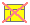
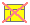
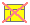

 
|  |
These slides form a trail imposed on a larger collection of slides and lecture notes Trail title page Trail abstract
| Page 1 | Introduction | Talk about LENO, page 1 | |
| Page 2 | Motivation | Talk about LENO, page 2 | |
| Page 3 | Main section | Talk about LENO, page 3 | |
| Page 4 | Leno features | Talk about LENO, page 4 | |
| Page 5 | Conclusions | Talk about LENO, page 5 | |
| Page 6 | Conclusions | Talk about LENO, page 6 |
Generated: Tuesday July 26, 2005, 10:27:48